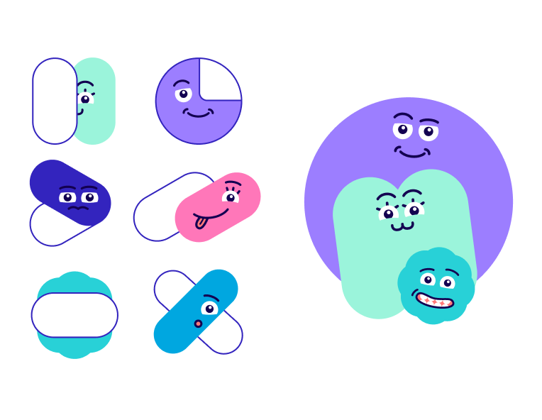
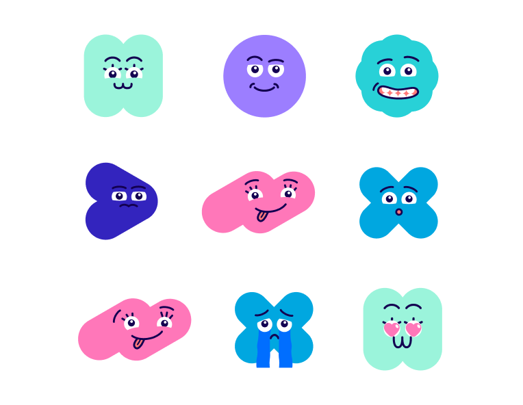
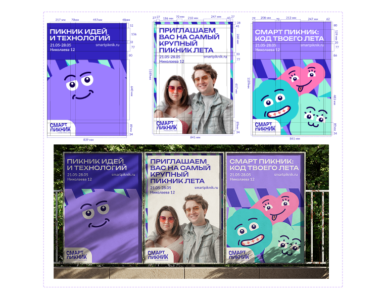
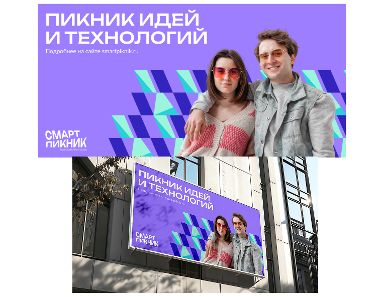
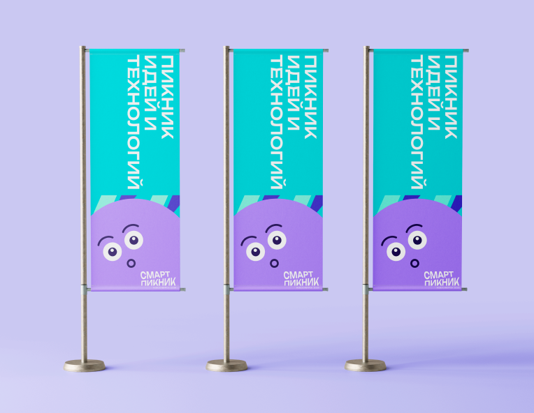
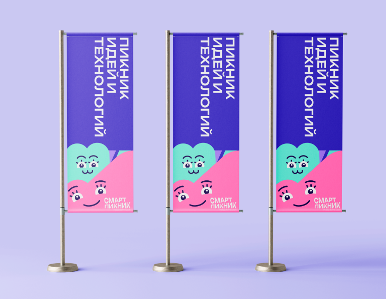
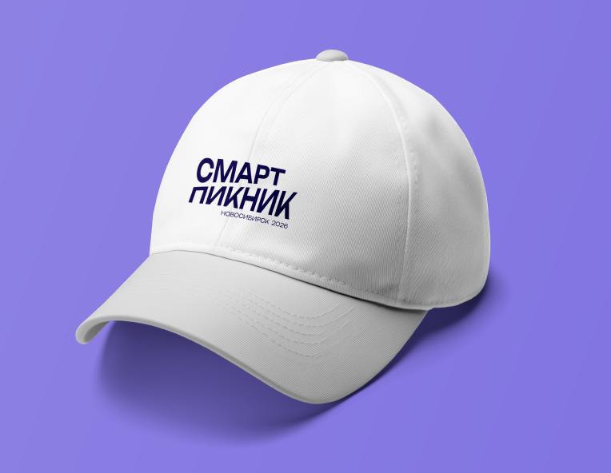
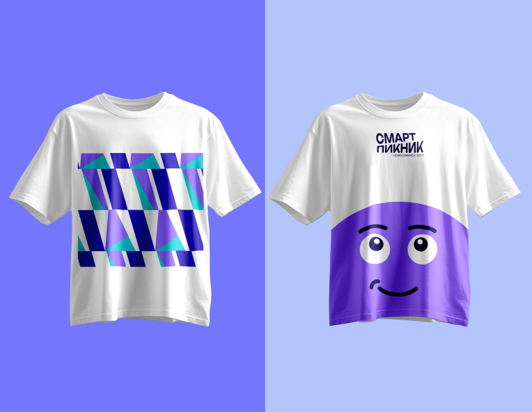

ЛЕТНИЙ ФЕСТИВАЛЬ
"СМАРТПИКНИК"
2025
Фирменный стиль для летнего фестиваля в Новосибирске. Проект начался с анализа аудитории и глубокого исследования, после чего была с нуля разработана визуальная система события, включая носители и мерч. Проект создавался в команде: Лыткин Владимир, Гусев Александр, Рахимов Химматулло, Жарко Максим.







